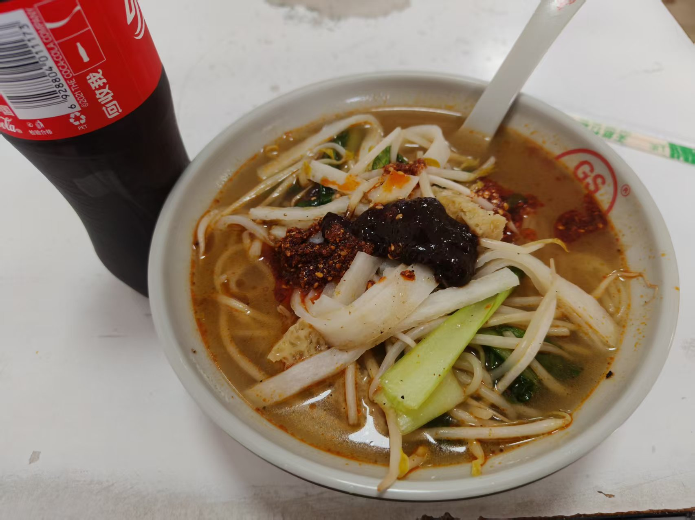

Suqian Ganmianpi is a popular street food from Suqian,Jiangsu. Made from wheat flour, the dough is rolled thin, steamed, and cut into chewy strips. It is known for its smooth texture and refreshing taste.
Typically served cold, it is tossed with chili oil, vinegar, garlic, and cucumber. The spicy, sour, and savory flavors make it a favorite snack, especially in summer. Locals love its satisfying chew and bold seasoning.